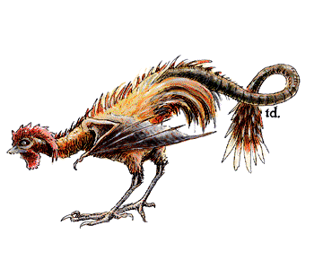

Cockatrice

| Cockatrice
| Pyrolisk
|
CLIMATE/TERRAIN:
| Temperate to trop-
| Temperate to trop-
|
| ical, any terrain
| ical, any terrain
|
FREQUENCY:
| Uncommon
| Rare
|
ORGANIZATION:
| Flock
| Flock
|
ACTIVITY CYCLE:
| Any
| Any
|
DIET:
| Omnivorous
| Omnivorous
|
INTELLIGENCE:
| Animal (1)
| Low (5)
|
TREASURE:
| D
| D
|
ALIGNMENT:
| Neutral
| Neutral evil
|
NO. APPEARING:
| 1-6
| 1-4
|
ARMOR CLASS:
| 6
| 6
|
MOVEMENT:
| 6, Fl 18 (C)
| 6, Fl 18 (C)
|
HIT DICE:
| 5
| 6+2
|
THAC0:
| 15
| 13
|
NO. OF ATTACKS:
| 1
| 1
|
DAMAGE/ATTACK:
| 1-3
| 1-4
|
SPECIAL ATTACKS:
| Petrification
| Gaze
|
SPECIAL DEFENSES:
| Nil
| Immune to fire
|
MAGIC RESISTANCE:
| Nil
| Nil
|
SIZE:
| S (3' tall)
| S (3' tall)
|
MORALE:
| Steady (11-12)
| Steady (11-12)
|
XP VALUE:
| 650
| 1400
|
The cockatrice is an eerie, repulsive hybrid of lizard, cock, and bat. It is
infamous for its ability to turn flesh to stone.
The cockatrice is about the size of a large goose or turkey, and has the head
and body of a cock, with two bat-like wings and the long tail of a lizard
tipped with a few feathers. Its feathers are golden brown, its beak yellow, its tail
green, and its wings gray. The cockatrice's wattles, comb, and eyes are bright
red.
Females, which are much rarer than males, differ only in that they have no
wattles or comb.
Combat: The cockatrice will fiercely attack anything, human or otherwise, which it
deems a threat to itself or its lair. When attacking, the cockatrice will attempt
to grapple with its foe, touching exposed flesh and turning it to stone. Flocks
of cockatrices will do their utmost to overwhelm and confuse their opponents,
and they will sometimes fly directly into their victims' faces.
While the fatal touch of a cockatrice's beak will affect victims clothed in
leather or fabric, it will not work through metal armor. The touch will, however,
extend into the Ethereal Plane. The cockatrice is somewhat aware of the limits
of its powers, and natural selection has taught it to strike only at exposed
flesh. If large areas of the opponent's flesh are exposed, it should be assumed
that the cockatrice automatically touches flesh. If the target is reasonably
well armored, the base chance of a cockatrice striking an area which it can
affect is equal to 10% times the adjusted Armor Class of the victim.
Habitat/Society: The cockatrice is immune to the petrification powers of others of its kind.
The diet of the cockatrice consists of insects, small lizards and the like.
When it hunts these animals, the creature does not employ its power to petrify
living things.
It is distinguished from other avians by its unusual habits and nasty
temperament. Since females are rare, they are the dominant sex and often have more than
one mate. In fact, males fight or strut for the privilege of joining a
female's harem. These mated groups usually build their nests in caves. Nest sites are
permanent, and the cockatrice constantly seeks to decorate its nesting site by
lining it with shining objects like coins and gems.
Females lay one or two brownish red, rust speckled eggs per month. There is
only a 25% chance that any given egg will hatch. Those that are fertile hatch in
11-19 days. The young reach maturity and full power within six months. Once
they achieve adulthood, the hatchlings are driven away from the nesting site by
their parents. Larger groups of cockatrices encountered will frequently be young
driven from the nest who have temporarily united for survival.
Ecology: The cockatrice thrives in the wilderness. Its petrification power makes it
immune to most predators and enables it to compete with other birds for food. The
feathers of the cockatrice are prized by certain wizards as many magical
scrolls must be inscribed with pens made from such quills. Many people also seek
unhatched eggs, or even live cockatrices, as unusual pets or guardians.
Pyrolisk
Frequently mistaken for its less malignant relative, the pyrolisk is virtually
identical to the cockatrice except for the single red feather in its tail and
the reddish cast of its wings. Whereas the cockatrice is motivated by instinct
alone, the pyrolisk revels in spreading mayhem. Any victims who fail to save
vs. death magic when meeting its gaze will instantly burst into flames, dying in
agony. If the save is made, they are still burnt for 2-13 (1d12+1) points of
damage. Any creature within 30 feet innately or magically immune to fire will not
be affected by its gaze, and anyone who makes their saving throw is thereafter
immune to the gaze of that particular pyrolisk.
The creature can cause any fire source within 30 yards to explode in fireworks
(as a pyrotechnics spell) once per round.
The pyrolisk is itself immune to all fire-based spells and attacks.
The pyrolisk's mortal enemy is the phoenix, although any creature which the
monster encounters is likely to be attacked.
Index